Kinematic Data Collection of Human Movement
In order to analyse human movement quantitatively, we must measure human movement. Kinematic variables are variables that describe human movement. They include displacement, velocity, and acceleration. The most common method of measuring human movement is to use film or video recordings with a method called "motion capture" to collect displacement data. However, there are many ways of performing motion capture and other methods to obtain kinematic descriptors. This lecture presents several methods with the advantages and disadvantages of each.
Motion Capture:
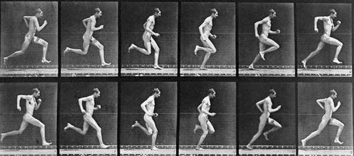1) Cine Filming:
Prior to the 1980s, the most common method of motion capture used high speed cinematic film cameras. The first use in quantifying human motion was achieved by Eadweard Muybridge in the late 1800s. Frame-by-frame analysis revealed aspects to motion that were previously unknown. He is most famous for helping Stanford win a bet that when a horse is trotting, all four hooves are off the ground while the hooves are under the horse. Most artists painted horses airborne with the limbs extended.
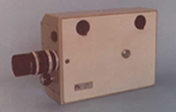
In the mid 1900s, pin registered cameras with perforated film allowed high speed exposure of frames that made motion analysis available to biomechanists. Typical movie cameras had a frame rate of 24 or 48 frames per second but the Locam camera pictured to the right allowed rates of up to 500 frames per second. The cameras were expensive and researchers still had to project the frames for digitization. The process of digitization was extremely tedious but electronic digitizers connected to computers expedited the process considerably by the 1980's.
Another factor which must be considered is the shutter speed. In order to properly expose the film, enough light must be allowed to reach the film. A camera set at 50 frames per second does not expose the film for 1/50 of a second. The exposure is usually much shorter so that the image is captured almost instantly which prevents motion blur. The images below show the results of three shutter speeds. As the shutter speed increases, so too does the sharpness of the image but high shutter speeds require more light so quite often extra lights are used in biomechanical filming.
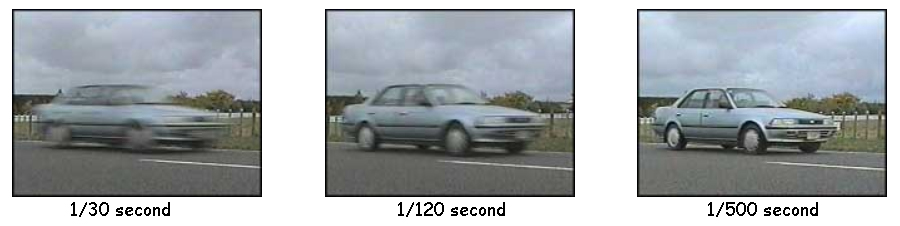
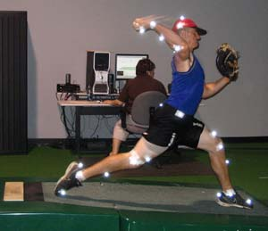
2) Video:
Since 1980, video became increasingly more popular than cine film due to the lower cost of the cameras and improvements to computer software and video interfacing that allowed automatic digitizing. Most video cameras have a fixed frame rate of 30 frames per second which is not fast enough to quantify many sport movements or impacts. High speed video cameras are available but the cost is higher. Video cameras use a CCD that increases the electrical charge as light hits it and records the image digitally rather than using film but the biomechanist also needs to be aware of the shutter speeds mentioned above for film.
Another consideration when using video to quantify human movement is the necessity for three dimensional coordinates. 3-D video is available, but at least two cameras are required and they must be synchronized. Commercial system are available to do this but many who require 3-D data use the two systems below.
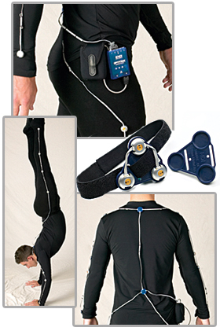
3) Optoelectronics:
These systems use infra-red light emitting diodes (IREDs) as markers on the subject. The subject wears a strobe control unit that sequences the flashing of each marker.
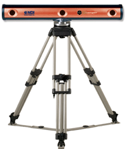The cameras are actually sensors for the IREDs and they can detect the 3-D locations at very high frame rates and with much better accuracy than video and they require no digitization. At least two of the sensors must "see" a marker in order to calculate it's three dimensional coordinates. If less than two cameras see a marker, it is listed as not found. With manual digitizing of film or video, the researcher can estimate the location of a hidden marker but optoelectronics requires interpolation of the data. Depending the movement of the subject, the researcher may require several camera units to ensure that a each marker is seen by at least two sensors at all times.
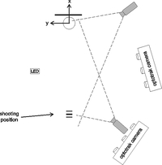
The disadvantage of these systems is that the markers require activation with wires running from the subject to the strobe controller. There are wireless transmitters today but they require a battery and generally encumber the subject more than the passive markers used in video. Emerging lithium ion battery technology allows the weight to be reduced and other wireless technologies will make subject encumberment less of an issue in the future.
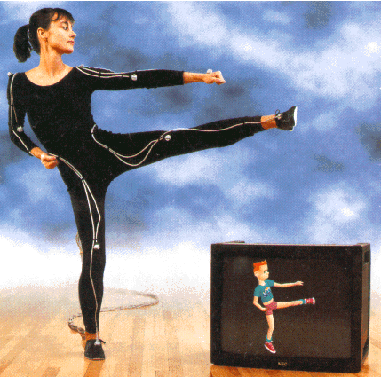4) Electro-magnetic:
Magnetic systems calculate position and orientation by the relative magnetic flux of three orthogonal coils on both the transmitter and each receiver. The relative intensity of the voltage or current of the three coils allows these systems to calculate both range and orientation by meticulously mapping the tracking volume. The sensor output is 6DOF, which provides useful results obtained with two-thirds the number of markers required in optical systems; one on upper arm and one on lower arm for elbow position and angle. The markers are not occluded by nonmetallic objects but are susceptible to magnetic and electrical interference from metal objects in the environment, like rebar (steel reinforcing bars in concrete) or wiring, which affect the magnetic field, and electrical sources such as monitors, lights, cables and computers. The sensor response is nonlinear, especially toward edges of the capture area. The wiring from the sensors tends to preclude extreme performance movements. The capture volumes for magnetic systems are dramatically smaller than they are for optical systems.
5) 2-D vs 3-D:
Cine film and video were originally used for two dimensional (planar) analyses. The biomechanist would choose the plane of motion and position the camera perpendicular to that plane. However, many human movements have important components in more than a single plane. The analysis can be extended to three dimensions by using a second camera. Originally, the two cameras needed to be situated perpendicular to each other but a mathematical transformation called the "direct linear transform" (DLT) allowed three dimensional coordinates to be calculated from any two independent views of a marker. Even with the DLT, the cameras need to be synchronized and there is added digitization and added cost of multiple cameras.
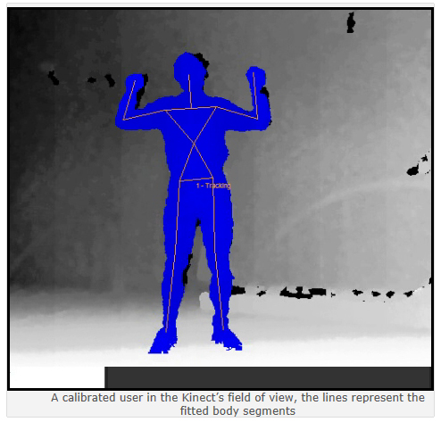6) 3-D with a Single Camera:
Recent technology has combined a traditional digital camera with a laser beam to create a point cloud that measures the distance from the camera to an object. At present, the technology is used in the popular video game "Xbox Kinect" to sense the three dimensional movements of people who are attempting to control the computer game. The accuracy is not as good as the 3-D methods above and considerable software must be developed to convert the image and laser data into a 3-D model of the human subject but future developments may lead to a very low cost 3-D method.
Goniometry:
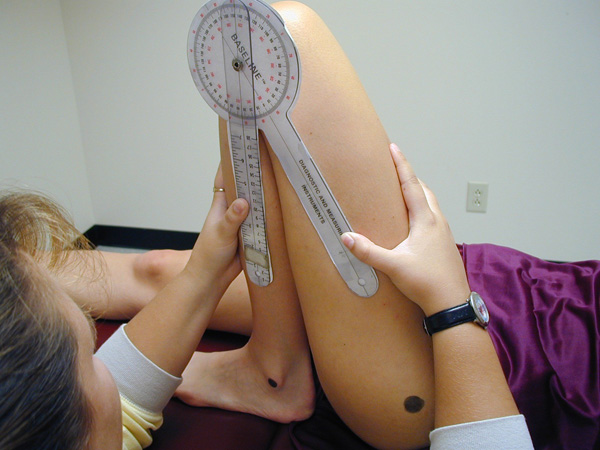1)Hand Goniometry:
Goniometry is the measurement of joint angles. Therapists often use a hand goniometer to measure the range of motion. The device is a simple protractor with two blades that can be rotated. The device is positioned with the center over the joint and the two blades are aligned with the two segments.
Hand goniometry works well in static positions but is not useful in dynamic joint movement.

2) Electrogoniometry (ELGON):
In order to measure joint angles dynamically, biomechanists use a device in which the protractor is replaced by an electrical component called a potentiometer. The potentiometer is a variable resister just like the volume knob on a radio in which the voltage (volume) increases and decreases as the knob is rotated.
The diagram on the right shows the ELGON placed with the blades on the forearm and upper arm and the potentiometer over the elbow joint center. As the subject flexes and extends her elbow, the voltage will change proportionately with the change in joint angular displacement.
Accelerometry:
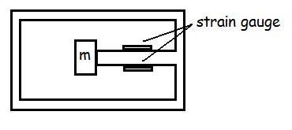1) Strain Gauge Accelerometer:
The figure on the right is a simplification of an accelerometer consisting of a mass connected to the housing by a cantilever (beam). As the device is accelerated, the mass resists the motion and bends the beam. As the beam bends, strain gauges placed on the beam register a voltage that is proportional to the acceleration.
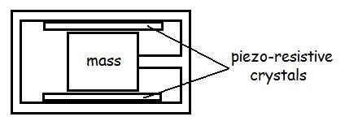
2) Piezo-resistive Accelerometer:
Similar to the strain gauge accelerometers, piezo-resistive accelerometers use a piezoresistive crystal. The capacitance through the crystal is affected by the compression of the mass. This transducer has a higher frequency response than the strain gauge accelerometer.
3)
Uni-axial vs
Tri-axial: